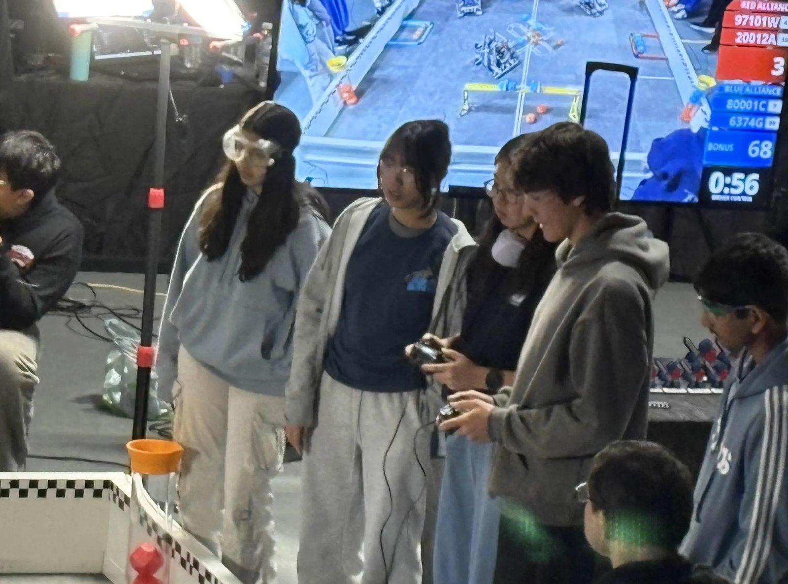

G-Team
2025 to now



What I built
I joined G-Team as a builder. On comp days I'm on drive team, standing next to our driver and calling out what's next. That's my favorite part.
This season my co-captain and I lead the build, the design and the engineering notebook. For Override we leaned toward an X-drive with a wedge skirt so other robots can't push us around, a frame sized around a 23 to 25 hole square, and a goal alignment plate measured from the official field element dimensions.
Our notebook follows the engineering design process: dated entries, decision matrices and documented failures. Learning Moment sections explain the science behind each design choice, some of it carried over from building my drone.
Results
Now I'm co-captain and lead designer. We grew from 5 girls to 14 and host build days at my house 4+ times a week.